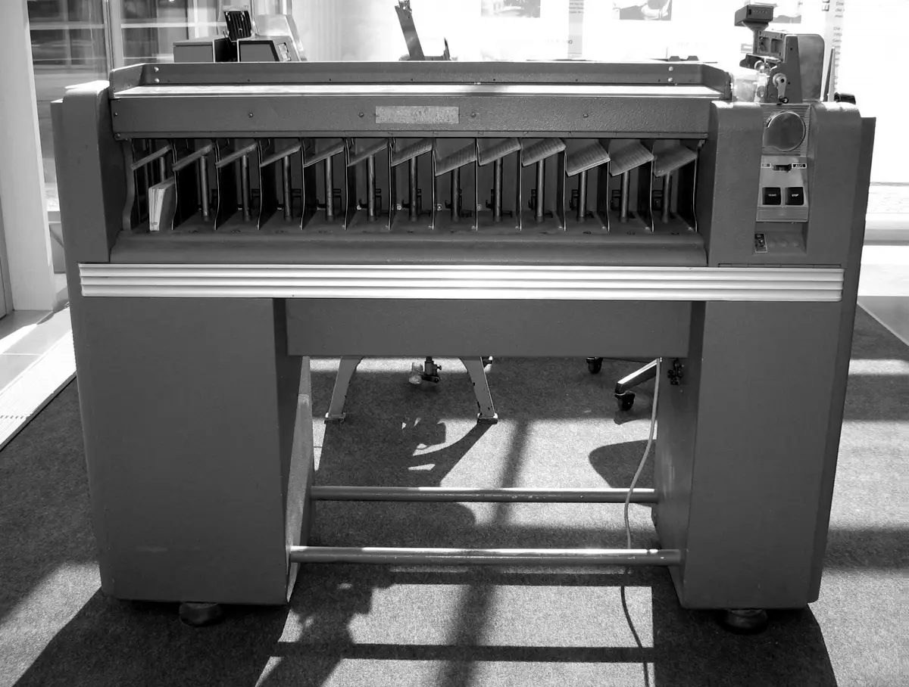

Diagnóstico de dados
Em três semanas você sabe por que os números não batem, quanto isso custa e o que corrigir primeiro. Sai com um plano de 90 dias, priorizado por impacto no caixa.
- Prazo
- 3 semanas
- Investimento
- a partir de R$ 9.800
Bruno Areal, consultor de dados há 15 anos. Faço financeiro, comercial e TI chegarem ao mesmo número.
R$ 4,82 miFinanceiro
R$ 5,10 miComercial
R$ 4,67 miPainel de BI
Receita de outubro, segundo cada área.
O financeiro diz 4,82,o comercial diz 5,10,o painel diz 4,67,e a reunião viraauditoria de planilha.
Quase nunca falta ferramenta. Falta uma regra de negócio escrita uma vez só, que todas as áreas usam.

Cada chave é um resultado típico de projeto. Ligue as que fazem sentido para a sua empresa e veja quanto tempo volta para a equipe.
A receita fecha igual em todas as áreas
Fechamento do mês em 2 dias úteis, não em 9. A reunião discute o resultado, não a planilha.
A conta do Snowflake para de surpreender
Teto e alerta por área. Revisando warehouses e consultas, a conta costuma cair de 30% a 40%.
Os relatórios chegam prontos às 6h
As 20 horas por semana de copiar e colar planilha viram uma rotina automática com n8n e dbt.
A IA responde com o número certo
Perguntas em português sobre vendas e estoque, respondidas a partir da base validada, e não de planilhas soltas.
Em três semanas você sabe por que os números não batem, quanto isso custa e o que corrigir primeiro. Sai com um plano de 90 dias, priorizado por impacto no caixa.
Snowflake e dbt com uma regra única para receita, custo e margem, testada todo dia. O BI sai das planilhas e passa a ter dono, histórico e documentação.
Fluxos em n8n e Supabase que tiram a equipe do copiar e colar, e assistentes de IA que respondem a partir dos dados já validados.

Contados do jeito que interessa a quem decide: o que mudou no fechamento, no custo e no tempo da equipe.
9 → 2 dias
Três áreas, três receitas. Escrevi uma regra única para devoluções e cancelamentos e testei todo dia. O fechamento do mês caiu de 9 para 2 dias úteis.
Ler o case| Fonte | Antes | Depois | Status |
|---|---|---|---|
| Financeiro (ERP) | 4.821.300 | 4.821.300 | confere |
| Comercial (CRM) | 5.104.870 | 4.821.300 | confere |
| Painel de BI | 4.668.950 | 4.821.300 | confere |
| Devoluções e cancelamentos | regra própria | −283.570 | regra única |
−37%
A conta do Snowflake dobrou em um ano sem ninguém saber por quê. Revisei warehouses, horários e consultas pesadas e criei alertas por área.
Ler o case20 h/semana
O relatório comercial levava dois dias de planilha. Agora ele chega pronto às 6h, com 41 testes conferindo cada número antes de alguém abrir.
Ler o case
São 15 anos entre bancos, varejo e indústria, primeiro escrevendo as consultas, depois desenhando a arquitetura. Trabalho sozinho e direto com quem decide: sem camada de gerente de conta, com escopo fechado e entregas a cada duas semanas que dá para conferir.
Meia hora de conversa, sem custo, para entender onde os seus números se desencontram.